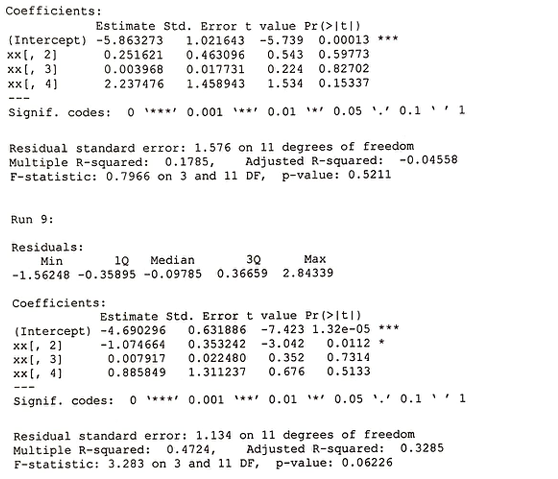

Capturing the Loss
Characterizing & understanding internet flow traffic and packet loss.
Summary
The objective of the analysis was to predict the future packet loss rate and to identify any variables that might impact the packet loss rate. The dataset includes a total of 147 observations with variables Run Number, First Flow Start Time, Flow Start Time, Duration, RTT, User Send Rate, Achieved Rate, Flow Loss Rate, and Background Traffic Loss Rate. Logistic regressions, as well as Poisson regression, were performed to identify the model of best fit. The analysis returned a model of best fit within individual runs as well as a suggestion to isolated the variables to more effectively determine their impacts.
Introduction
Internet traffic flow is perhaps one of the most unpredictable types of data. Usage of one user does not directly influence the other, and when one user's usage is piled upon another user's and so on, it creates a seemingly random fluctuation. While fluctuation is expected and usage follows a reasonable pattern, such as general usage trending downwards during the hours between 2 AM to 6 AM or increasing during weekends compared to weekdays, predicting the usage for the next second or the next hour without any environmental data is a daunting task.
Prof. Malathi Veerararghavan's graduate student Fatma (henceforth "Client)) requested that the below concerns be addressed:
- Given the simplified data concerning the past traffic rate, is sit possible to predict the future traffic rate? Alternatively, is it possible to model the packet loss rate?
- Are there experimental design improvements that can lessen the magnitude of packet loss and/or variables that affect packet loss?
The dataset includes a total of 147 lines of data with variables Run Number>, First Flow Start Time, Flow Start Time, Duration, RTT, User Send Rate, Achieved Rate, Flow Loss Rate, and Background Traffic Loss Rate. To address the Client's concerns, regression techniques including logistic regression and Poisson regression as well as statistical modeling were utilized.
Approaches and Results
The initial summary of data is as below.
It should additionally be noted that while the majority of data (139 observations out of a total of 147) have a User Flow Loss Rate of 1.9 Gb or below, 8 outliers have greater than 1.9 Gb of loss. They are listed below. While these observations may be removed as regression models are fitted, the loss rate of 1.9 Gb is still an unacceptable amount of data loss - in an ideal setting, all loss would be at 0.01 Gb or lower.
The data was transformed due to the large distance between the variables found during initial plotting. Then, we performed logistic regression on the log of User Flow Loss Rate as a function of the log of RTT, log of Duration, and log of User Send RAte to fit a regression model. [Similar regression without the Duration variable was also performed and returned analogous results.] The results are below.
Similarly, Poisson regression on non-transformed data was performed on the same variables.
Thus far, the model of log of User Flow Loss Rate as a function of RTT, log of Duration, and excess value(s) appear to be the best fit within individual runs. However, the coefficients for the 8 different runs remain to be checked for consistency.
While no significant results are found, a total of 8 outliers were removed.
Conclusion
While it was disappointing that the individual achieved flow rate was not a part of the dataset, effectively nullifying the results attained using "Excess" values, we still have high hopes for this data.
The presented dataset was a fantastic dataset for exploring possible questions that will lead to more effective datasets, and we sincerely hope that the Client stays with us to explore further into data regarding internet traffic flow.
Our recommendation for future experiments is to, if possible, set RTT to be consistent during multiple runs -initially setting at low values of RTT and gradually increasing the values for different runs- to isolate the effects of RTT. Similarly, if other variables can be isolated, it would lead to a more acute analysis of data.